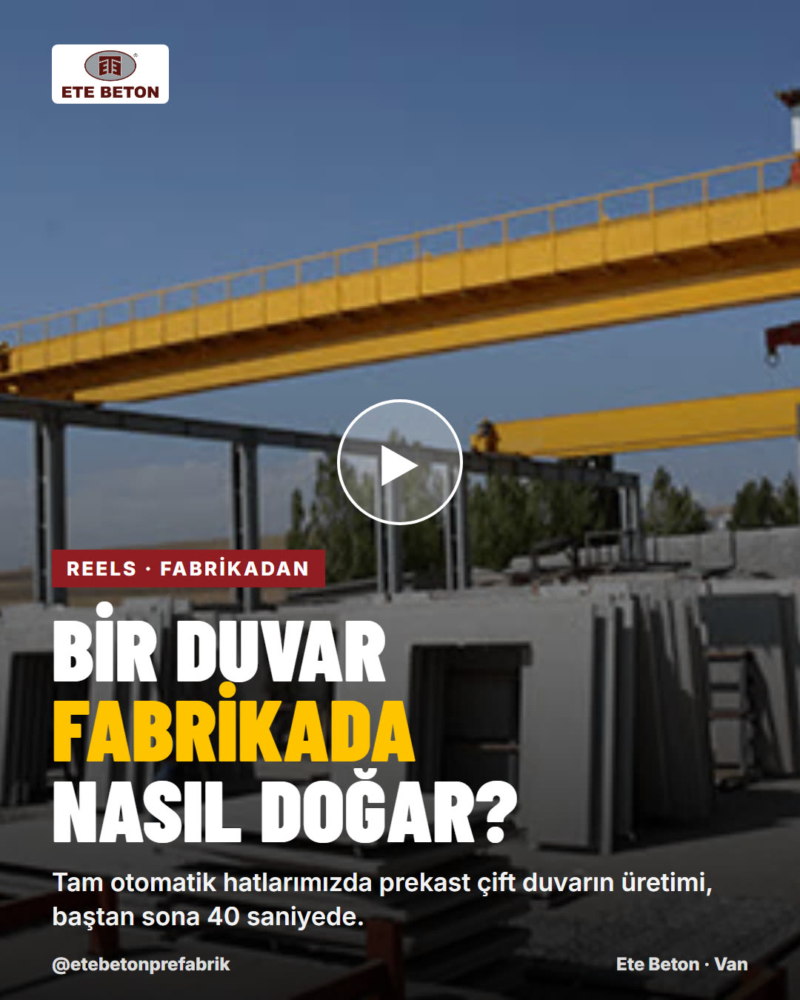
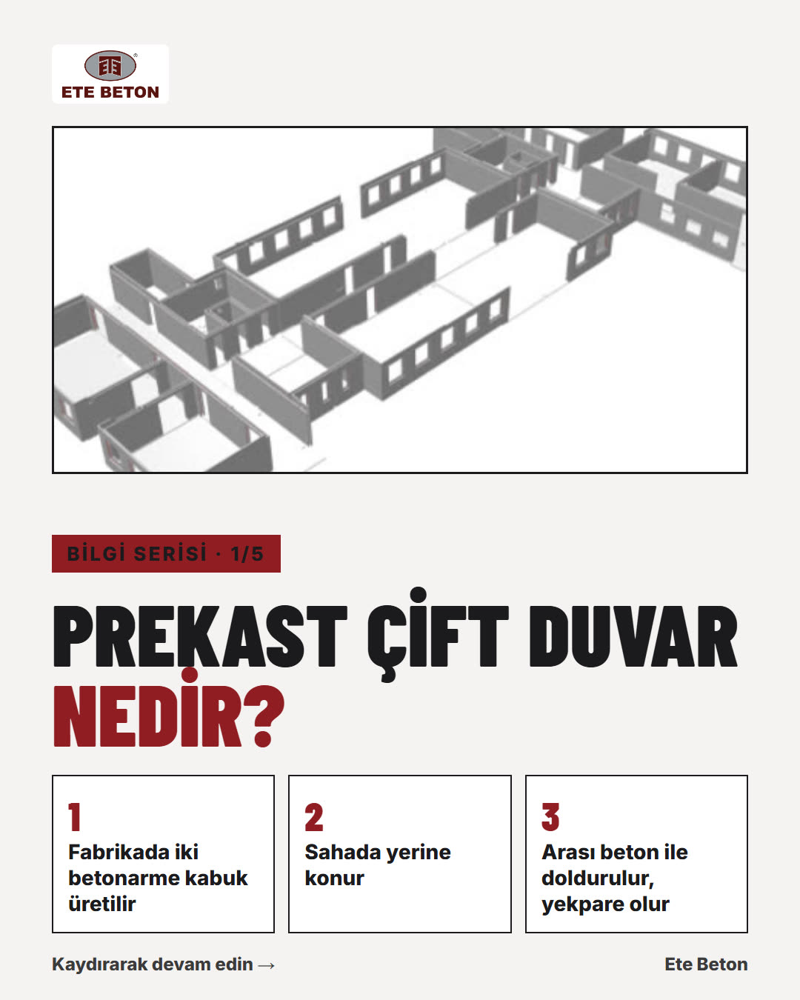
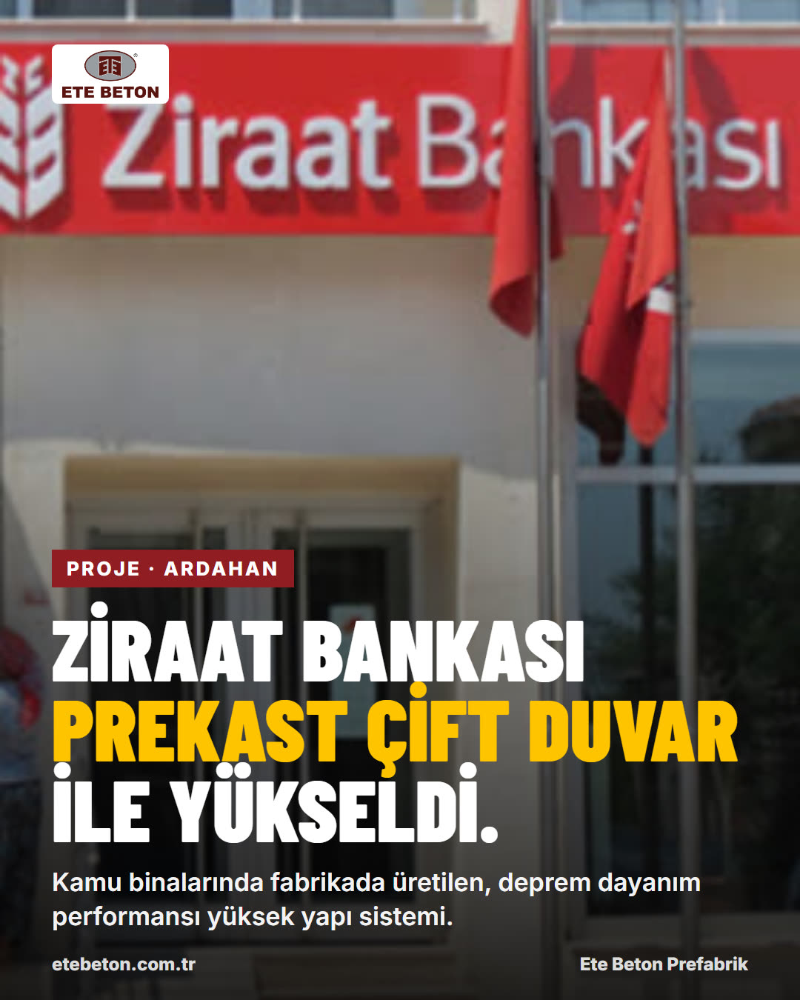
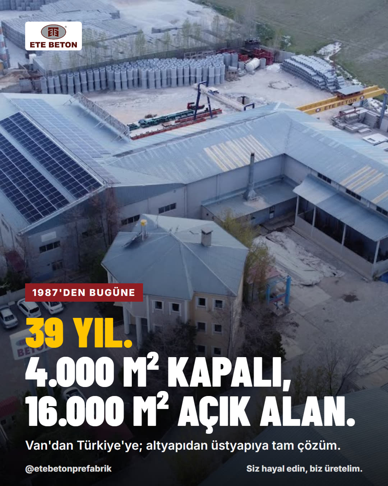
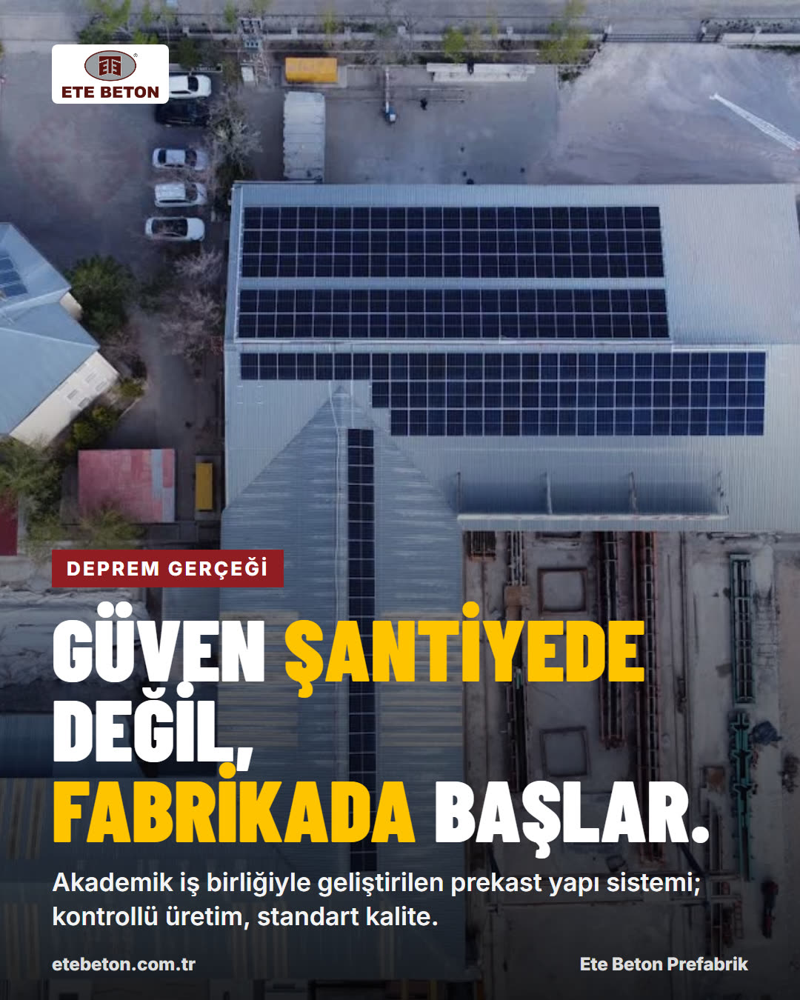

etebetonprefabrikVan, Türkiye
Instagram Reels
Bir duvar fabrikada nasıl doğar? 🏗️ Tam otomatik hatlarımızda prekast çift duvarın yolculuğu: donatıdan betona, vinçten sevkiyata.
#prekast #prefabrik #etebeton #deprem #inşaat #van
Format: 30–45 sn dikey video, Türkçe altyazı + seslendirme · aynı video YouTube Shorts ve X'te
etebetonprefabrikBilgi serisi
Instagram Carousel
Prekast çift duvar nedir, klasik betonarmeden farkı ne? 5 kartta anlattık 👉
#prekastçiftduvar #yapıteknolojisi #mühendislik #etebeton
Format: 5 kartlık kaydırmalı eğitici seri · LinkedIn'de PDF belge olarak da paylaşılır
Ete Beton Prefabrik & Precast1.800 takipçi
LinkedIn
Proje: Ardahan Ziraat Bankası 🏦
Kamu yapılarında hız ve kalite bir arada: fabrikada üretilen prekast çift duvar elemanlarıyla yükselen bir proje daha. Proje süreci, montaj ve teslimden kareler yorumlarda.
#kamuyapıları #prekast #etebeton
Format: vaka çalışması · hedef: müteahhit, yatırımcı, kamu teknik birimleri
etebetonprefabrikTuşba, Van
Instagram + LinkedIn
1987'den bugüne 39 yıl. 4.000 m² kapalı, 16.000 m² açık üretim alanı. Siz hayal edin, biz üretelim. 🇹🇷
#etebeton #39yıl #van #prefabrik
Format: kurumsal güven gönderisi · ayda 1
etebetonprefabrikVan, Türkiye
Reels + X
Deprem gerçeğine karşı güven şantiyede değil, fabrikada başlar. Kontrollü üretim, standart kalite, akademik iş birliğiyle geliştirilen prekast yapı sistemi.
#deprem #güvenliyapı #prekast #etebeton
Format: farkındalık serisi · deprem haftası ve yıl dönümlerinde öne çıkarılır